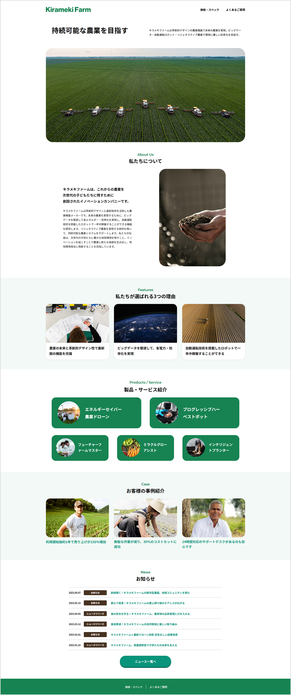

Kirameki Farm
-
- コーディング
- 3日
-
HTML / CSS / JavaScript / swiper / Photoshop
-
https://github.com/Itou-Hiroaki-qqq/website
- 制作概要
- Webスクールの課題として、案件概要書、仕様書、チェックシートに基づき架空のLPを制作
- レスポンシブ対応
- PC／タブレット／スマホ対応
- コーディング概要
-
保守性を考慮してBEM設計に基づいたクラス命名を採用。
仮想クライアントの要望に基づきほぼピクセルパーフェクトになるようスタイリングした。
ユーザー操作を意識したUI設計としてドロワーメニュー、カルーセル、アコーディオンメニュー、CTAボタンを配置した。 - 工夫点
-
jQueryは用いずにJavaScriptでアコーディオンメニューを実装した。
柔軟性の高いSwiperを活用し、カルーセルを実装。実用的なフロントエンド実装スキルを強化した。
アコーディオンメニューは、シンプルな実装とアクセシビリティへの配慮を兼ね備えたdetailsタグを使用。ネイティブなHTML要素を活用し、モダンな開発環境への対応力を高めた。 - デモURL
-
https://ito-hiroaki.sakura.ne.jp/tech_website
※IDとpasswordを入力してご覧ください。
ID: ito-hiroaki
password: basic999qqq
